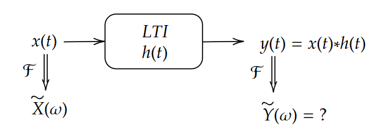
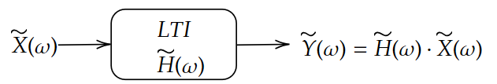
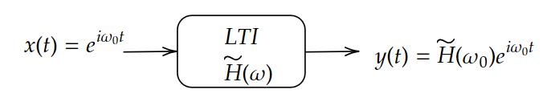

תגובה בתדר#
אמ;לק
מערכת LTI מקיימת:
\(y=x*h\) ↔ \(\tilde{Y}(\omega)=\tilde{H}(\omega)\tilde{X}(\omega)\sqrt{2\pi}\)
. אקספוננטים מרוכבים הם פונקציות עצמיות → פירוק פורייה מפשט ניתוח.
מערכת LTI לא מייצרת תדרים חדשים אלא רק מגבירה או מנחיתה תדרים קיימים. דרושה גם אי־תלות בזמן; לינאריות לבדה אינה מספיקה למסקנה הזו. המערכת משנה רק אמפליטודה ופאזה, ופונקציית התמסורת
\(\tilde{H}(\omega)=\mathcal{F}[h(t)]\)
היא האנלוג של מטריצה בבסיס עצמי. כלומר מלוכסנת.
פירוק לתדרים#
עם האינטואיציה שמערכות לינאריות מאפשרות לנו לפרק אות מורכב לסכום (או אינטגרל) של אותות פשוטים פירקנו את האות לפונקציות דלתא מוזזות בזמן:
תחת הפירוק הזה מצאנו את פונקציית התגובה להלם. שעבורה:
ועבור מערכת שהיא LTI קיבלנו כי
זאת התוצאה אולי הכי חשובה בקורס. אבל אין סיבה לעצור כאן. פונקציות ניתן לפרק בהרבה צורות שונות. דרך נוספת שאתם מכירים מקורסים אחרים היא פירוק טיילור:
הפירוק הזה לא יהיה לנו מאוד שימושי משום שפולינומים לא חסומים ולכן אם נדמיין שהאות שלנו הוא אחד הפולינומים האלו ונגדיר אנרגיה (בהרבה אותות) כ\(E\propto\intop_{-\infty}^{\infty}\left|x\left(t\right)\right|^{2}dt\) נקבל כי האות לא פיזיקאלי
איזה פירוק כדאי לשקול? נתחיל מפשוט לגלות את התשובה ולאט לאט נבין למה בחרנו דווקא את הפירוק הזה. התשובה תהיה טרנספורם פורייה:
למי שכבר יצא לראות את הנוסחה הזו הוא יזהה את זה דווקא בתור טרנספורם פורייה ההפוך אבל שימו לב שכל מה שכתבנו כאן הוא שהאות שלנו ניתן לכתיבה כסכום של הפונקציות \(e^{i\omega t}\) ולכל פונקצייה יש מקדם \(X\left(\omega\right)\) אשר מכפיל אותה. איך נמצא את המקדמים? נתן כאן את הנוסחה בלי להסביר ובהמשך זה יתבהר:
זה טרנספורם פורייה (לא ההפוך) כמו שלרוב מכירים. כלומר טרנספורם פורייה הוא דרך לחשב את מקדמי הפריסה של האות.
הערת מוטיבציה: למה דווקא אקספוננטים מרוכבים \(e^{i\omega t}\)? כי עבור מערכות LTI הם פונקציות עצמיות (eigenfunctions): נכנסים ויוצאים באותו תדר, רק עם שינוי אמפליטודה ופאזה. זה עושה את האנליזה פשוטה מאוד ונראה זאת בהמשך.
נבדוק שהנוסחא באמת נכונה:
נשים לב
האינטגרל \(\intop_{-\infty}^{\infty}e^{i\omega\left(t-\tau\right)}d\omega\) שווה 0 כאשר \(t\ne\tau\) ואינסוף אחרת. כלומר:
מאיפה מגיע פאקטור ה\(2\pi\)? צריך כבר לחשב בזהירות ולהבין מה השטח מתחת לפונקצייה הזו
תגובת מערכת LTI בפירוק תדרי#
נשאל מה אם אנחנו מסתכלים על הפעולה של מערכת LTI על אות כאשר אנחנו מייצגים אותו בעזרת המקדמים במרחב התדר

נבדוק מהו \(\tilde{Y}\left(\omega\right)\equiv\mathcal{F}\left[x\left(t\right)\ast h\left(t\right)\right]\):
בקצרה קיבלנו כי (הטריק המרכזי: מחליפים סדר אינטגרציה ומגדירים \(u=t-\tau\) כדי לחשוף את המכפלה בתדר):
(את הכיוון ההפוך אתם מוזמנים לעשות וזה חישוב מאוד דומה)
נקרא לפונקציה זו פונקציית התמסורת:
נשים לב שהרבה פעמים לא נרשום את הפקטור של ה-\(\sqrt{2\pi}\) וכל עוד לא עובדים עם עוצמות אבסולוטיות (ולא יחסיות) הוא לא ישנה. נרשום את זה בדיאגרמה כמו מקודם

קיבלנו שמערכת LTI היא equalizer: היא מגבירה או מנמיכה תדרים מסוימים, ומסיטה פאזה – בלי ליצור תדרים חדשים.
כמה מסקנות חשובות נובעות מזה:
אין יצירת תדרים חדשים: \(\tilde{X}\left(\omega_{0}\right)=0\Rightarrow\tilde{Y}\left(\omega_{0}\right)=0\)
משפט הקונבולוציה: קונבולוציה בזמן היא מכפלה בתדר והפוך
ניתן לעבוד לגמרי במרחב התדר. כל מערכת LTI ניתן לאפיין לחלוטין במרחב התדר
סיכום קצר – אנלוגיה לאלגברה לינארית
אותות ↔ וקטורים; מערכות ↔ אופרטורים; תגובה להלם h(t) ↔ מטריצה; בסיס התדר \(e^{i\omega t}\) ↔ בסיס עצמי; קונבולוציה ↔ מכפלה בתדר.
תכונות של פונקציית התמסורת#
בגלל שאנחנו מניחים שפונקציית התגובה להלם קוזאלית ניתן להראות שיש קשר בין \(\mathcal{\Re}\left[\tilde{H}\left(\omega\right)\right]\) ובין \(\Im\left[\tilde{H}\left(\omega\right)\right]\) אנחנו לא ניכנס לזה מעבר לכך ומי שמעוניין מוזמן לקרוא על Kramers–Kronig relations
פונקציית התגובה להלם ממשית ולכן: \(\tilde{H}\left(-\omega\right)=\tilde{H}^{\ast}\left(\omega\right)\)
דוגמא לפונקציית התמסורת#
ניקח (איך לא) את הדוגמא של המיקרופון!!!
נחשב פורייה לשני הצדדים:
קיבלנו כי:
כלומר:
מה משתנה כשמשנים את המיקרופון?
מסה, ריסון וקשיחות
טוענים את הגרפים…
גודל התמסורת \(\left|\tilde{H}(\omega)\right|\)
פאזה \(\arg\tilde{H}(\omega)\;[\mathrm{rad}]\)
כניסה ומוצא בזמן
\(A=1\) · יחידות מודל · צירים קבועים · רוחב בחצי הספק · מצב מתמיד, ללא מעבר התחלתי
בפירוק לרכיבים: קו מקווקו הוא רכיב כניסה וקו רציף הוא רכיב מוצא. הצבעים תואמים לסמנים על עקומת התמסורת. אין נרמול נפרד של האותות.
בחרו תחילה קוסינוס יחיד ושנו את תדרו: התדר במוצא נשאר זהה, אך המשרעת והפאזה משתנות לפי הנקודה המסומנת על עקומת התמסורת. אחר כך בחרו סכום של שלושה קוסינוסים והשוו בין הסכום לפירוק לרכיבים. אפשר לשנות כל תדר ולהוציא רכיב מהסכום, בלי לשנות את קני המידה.
בהדגמת המיקרופון התמסורת היא ההגבר הפיזיקלי \(\tilde X(\omega)/\tilde P(\omega)\), כפי שנגזר ממשוואת התנועה. בנרמול פורייה הסימטרי שבו פתחנו, הגבר זה שווה ל־\(\sqrt{2\pi}\mathcal F[h](\omega)\).
נסו לשחק קצת עם האילוסטרציה. מהם הפרמטרים הכי טובים אם אנחנו רוצים לתכנן מיקרופון? נסו לגרום לרוחב של התמסורת להיות כמה שיותר רחב.
אם רוצים למקסם את התגובה בתדרים נמוכים נרצה \(A\) גדול ו\(k\) קטן
אם רוצים למקסם את התגובה בתדרים גבוהים נרצה \(\sqrt{\frac{k}{m}}\) גדול
ומה עם רוחב הסרט? לא נראה את זה כאן אבל ניתן לראות שרוחב הסרט נשלט על ידי \(\gamma\). כאשר \(\gamma\) גדול יתן \(\Delta\omega\) גדול ולהפך. כאשר תהיה לנו ב-\(\gamma\) גדול הבעיה של ריסון גדול מקריטי
לכסון מערכות#
נחזור עכשיו לשאלה למה הפריסה על \(e^{i\omega t}\) כל כך מוצלחת מה יקרה אם נכניס למערכת LTI \(x\left(t\right)=e^{i\omega_{0}t}\)? אנחנו יודעים שכל תדר מוכפל במספר אבל יש לנו רק תדר אחד. כלומר התוצאה תהיה: \(y\left(t\right)=\tilde{H}\left(\omega_{0}\right)e^{i\omega_{0}t}\)
או בדיאגרמה:

כלומר שיש לנו שתי דרכים למדוד את \(\tilde{H}\left(\omega_{0}\right)\)
להכניס \(\delta\left(t\right)\) למערכת ולעשות פורייה טרנספורם
להכניס למערכת \(\cos\left(\omega_{0}t\right)\) ולראות את שינוי האמפליטודה והפאזה
איך נראית המערכת כשאנחנו מכניסים אליה קוסינוס?
קיבלנו ש-\(\cos\left(\omega_{0}t\right)\) צובר פאזה והאמפליטודה שלו משתנה נשים לב שהמערכת היא Time Invariant ולכן:
מסקנות:
\(\cos\left(\omega_{0}t+\phi_{0}\right)\) נשאר באותו תדר אך משנה פאזה ואמפליטודה
קונבולוציה של \(\cos\left(\omega_{0}t+\phi_{0}\right)\) עם כל פונקציה (ממשית) נותן קוסינוס באותו תדר
אין יצירת תדרים חדשים במערכות LTI
מערכת LTI היא מסנן (filter) תדרים אשר משנה גם את האמפליטודה וגם את הפאזה
הקשר לאלגברה לינארית#
כבר התחלנו לעשות את ההקבלה כשלמדנו על פונקציית תגובה להלם אבל עכשיו אנחנו כבר יכולים ממש לבנות “אנלוגיה” שלמה בראש
בסיס סופי |
מערכות לינאריות |
|
|---|---|---|
וקטור |
\(\vec{v}\) |
\(x\) |
אופרטור |
\(T:V\rightarrow V\) |
\(y\left(t\right)=T:\left\{ x\left(t\right)\right\}\) |
לינאריות |
\(T\left(\alpha\vec{v_{1}}+\beta\vec{v_{2}}\right)=T\left(\alpha\vec{v_{1}}\right)+T\left(\beta\vec{v_{2}}\right)\) |
\(T:\left\{ \alpha x_{1}+\beta x_{2}\right\} =\alpha T:\left\{ x_{1}\right\} +\beta T:\left\{ x_{2}\right\}\) |
קואורדינטות של וקטור |
\(v_i\) |
\(x(t)\) |
פריסה על דלתא |
\(\left[\vec{v}\right]_{j}=\sum_{i}\left[\vec{v}\right]_{i}\delta_{ij}\) |
\(x\left(t\right)=\intop_{-\infty}^{\infty}x\left(\tau\right)\cdot\delta\left(t-\tau\right)d\tau\) |
תגובה להלם |
\(\left[T\left(\vec{v}\right)\right]_{i}=\sum_{j}h_{ij}\left[\vec{v}\right]_{j}\) |
\(T:\left\{ x\left(t\right)\right\} =\intop_{-\infty}^{\infty}x\left(\tau\right)\cdot h\left(t,\tau\right)d\tau\) |
מכפלה פנימית |
\(\left\langle \vec{v}|\vec{u}\right\rangle =\sum_{i}\left[\vec{v}\right]_{i}\cdot\left[\vec{u}\right]_{i}^{\ast}\) |
\(\left\langle x\left(t\right)|g\left(t\right)\right\rangle =\intop_{-\infty}^{\infty}x\left(t\right)\cdot g^{\ast}\left(t\right)dt\) |
בסיס |
\(\vec{v}=\sum_{i}\left[\vec{v}\right]_{i}\vec{b_{i}}\) |
\(x\left(t\right)=\intop_{-\infty}^{\infty}X\left(\alpha\right)g_{\alpha}\left(t\right)d\alpha\) |
אורתונורמליות של בסיס |
\(\left\langle \vec{b_{i}}|\vec{b_{j}}\right\rangle =\delta_{ij}\) |
\(\intop_{-\infty}^{\infty}g_{\alpha}\left(t\right)\cdot g_{\beta}^{\ast}\left(t\right)dt=\delta\left(\alpha-\beta\right)\) |
חישוב מקדמי פריסה בבסיס אורתונורמאלי |
\(\left[\vec{v}\right]_{i}=\left\langle \vec{v}|\vec{b_{i}}\right\rangle =\sum_{j}\left[\vec{v}\right]_{j}\cdot\left[\vec{b}_{i}\right]_{j}^{\ast}\) |
\(X\left(\alpha\right)=\left\langle x\left(t\right)|g_{\alpha}\left(t\right)\right\rangle =\intop_{-\infty}^{\infty}x\left(t\right)g_{\alpha}^{\ast}\left(t\right)dt\) |
וקטור עצמי |
\(T\left(\vec{v}_{i}\right)=\lambda_{i}\vec{v}_{i}\) |
\(T:\left\{ x_{\alpha}\left(t\right)\right\} =\lambda\left(\alpha\right)x_{\alpha}\left(t\right)\) |
בסיס התדר |
ספויילר לסוף הקורס |
\(g_{\omega}\left(t\right)=\frac{1}{\sqrt{2\pi}}e^{i\omega t}\) |
בסיס התדר הוא ארתונורמאלי |
ספויילר לסוף הקורס |
\(\frac{1}{2\pi}\intop_{-\infty}^{\infty}e^{i\omega_{i}t}\cdot e^{-i\omega_{j}t}dt=\delta\left(\omega_{i}-\omega_{j}\right)\) |
חישוב מקדמי פריסה בבסיס התדר |
ספויילר לסוף הקורס |
\(F\left(\omega\right)=\frac{1}{\sqrt{2\pi}}\intop_{-\infty}^{\infty}f\left(t\right)e^{-i\omega t}dt\) |
בסיס התדר מלכסן מערכות LTI |
ספויילר לסוף הקורס |
\(T:\left\{ e^{i\omega_{0}t}\right\} =\tilde{H}\left(\omega_{0}\right)e^{i\omega_{0}t}\) |
הפיכות מערכות LTI#
מתי מערכת LTI היא הפיכה? כלומר מתי ניתן לשרשר שתי מערכות כך שהתגובה הכוללת היא כלום. באופן מפתיע התשובה היא אף פעם. זה נובע מהרצון שלנו שהתגובה בזמן תהיה קוזאלית. מה כן אפשר לעשות? אפשר לשרשר שתי מערכות ככה שהתגובה הסופית תהיה התגובה בכניסה עד כדי דיליי.
באלגברה לינארית מטריצה היא הפיכה אם הדטרמיננטה שלה היא לא 0 או שאין לה אף וקטור עצמי עם ערך עצמי 0. באופן דומה נדרוש כי:
ואז נוכל לעצב מערכת נוספת שהתגובה שלה לתדר היא :
אבל כאן נכנסת הבעיה: לא בהכרח קיים הופכי קוזאלי. לעיתים מזיזים את \(h_{inv}(t)\) קדימה בזמן כדי להפוך את החלק השלילי לבלתי משמעותי (דיליי קטן):
עוד בעיה שלרוב קיימת היא רעש. אנחנו נגיע לזה בהמשך הקורס.
סיכום מושגי
תגובת התדר אומרת איך המערכת מטפלת ב”גווני הצליל”: היא לא יוצרת גוונים חדשים, רק משנה עוצמות ופאזות. זהו כלי תכנון מרכזי למסננים, מיקרופונים ומערכות תקשורת.